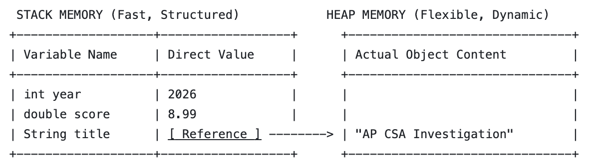
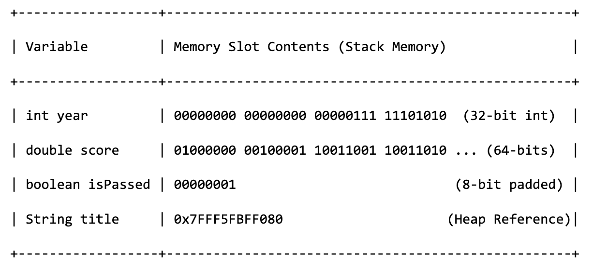

1.16 Variables and Data Types
CED Topics: 1.2
1. The Primitive Types You Need
| Type | Holds | Example |
|---|---|---|
int |
whole numbers | int year = 2010; |
double |
decimal numbers | double score = 8.8; |
boolean |
true or false |
boolean isReleased = true; |
String isn't on this list — it's a reference type, not a primitive, even though it acts a lot like one day-to-day. See below for how String and other reference types are stored in memory.
2. Declaring and Initializing
int year; // declared — a slot exists, but has no value you can use yet
year = 2010; // initialized — now it holds 2010
double score = 8.8; // declared and initialized in one line, the usual style
A declared-but-uninitialized local variable can't be read — Java won't compile code that tries to use one before it's been given a value.
3. Naming Rules and Conventions
Rules (break these and it won't compile):
- Must start with a letter,
_, or$— never a digit - Can't be a Java reserved word (
int,class,return, etc.) - Case-sensitive —
scoreandScoreare different variables
Conventions (legal either way, but expected style, including on the AP exam's own code):
- Variables and methods:
camelCase—movieScore, notmoviescoreormovie_score - Classes:
PascalCase—NetflixMovie, notnetflixMovie - Constants (
finalvariables):ALL_CAPS—MAX_SCORE
4. Data in Memory
The Stack and the Heap

- Primitives (int, double, boolean): These are local, lightweight variables. Their literal value is stored directly on the Stack. When you pass a primitive to a method, Java copies the raw value.
- References (String, arrays, custom objects): These are complex structures. The Stack only holds a 64-bit memory address pointer. The actual data lives in a large, flexible memory pool called the Heap. When you compare two strings or objects using ==, you are comparing their memory addresses on the Stack, not their actual contents on the Heap!
The Stack in Detail
The stack actually stores data in binary. Each data type is allocated a corresponding size.

How Integers Are Stored
Each bit position from right to left represents a positive power of 2 ((2^0, 2^1, 2^2), etc.).
- The rightmost bit represents (+2^0 = 1)
- The second bit represents (+2^1 = 2)
- The 31st bit represents (+2^30 = 1,073,741,824)
- The 32nd (leftmost) bit represents (-2^31 = -2,147,483,648)
Doing the Math
To find the value of any binary number, add up the weights of all the positions that have a 1. For your number:
- 32nd bit is 1 -> -2,147,483,648
- All other 31 bits are 0 = -2,147,483,648 + 0 = -2,147,483,648
How do you actually get 0?
Because of this math, the only way to get a value of zero in two's complement is if every single bit is zero (0000...0000).
To represent -1, you turn on the massive negative bit and fill the rest with positive bits to pull it back up toward zero:
-2,147,483,648+2^30+2^29+...+2^0 = -1
(Which looks like 11111111 11111111 11111111 11111111 in binary).
Integer.MAX_VALUE and Integer.MIN_VALUE
- Integer.MIN_VALUE is the lowest possible value a Java int can hold (which is -2,147,483,648).
- Integer.MAX_VALUE is the highest possible value a Java int can hold (2,147,483,647).
- Integer Overflow: If you add 1 to Integer.MAX_VALUE, it wraps around and becomes Integer.MIN_VALUE (which, as you now know, happens because the underlying binary bits flip to a 1 followed by 31 zeros).
How Doubles are Stored
A Java double reserves 64 bits: 1 Sign bit, 11 Exponent bits, and 52 Mantissa (base) bits.
- A decimal fraction that looks perfectly simple, like
0.1, often can't be written exactly in binary at all — it becomes an infinitely repeating binary fraction (0.000110011001100110011...), the same way1/3can't be written exactly as a finite decimal. - Storage cuts off at 52 bits, introducing floating-point precision loss (0.1+0.2=0.30000000000000004).
- AP CSA Rule: Never compare double values using ==. Check whether Math.abs(a - b) < 0.0001.
Common Errors
| Error | What's actually happening | Fix |
|---|---|---|
| "variable might not have been initialized" | Declared a variable but tried to use it before giving it a value | Initialize before you read it, even to a placeholder value |
Treating score and Score as the same variable |
Java is case-sensitive | Match capitalization exactly, every time |
Naming a variable starting with a digit (2ndScore) |
Illegal identifier — doesn't compile | Start with a letter instead (secondScore) |
Homework: 1.16 Variables and Data Types
Attention
- Write either Stack or Heap for each:
- location of the actual primitive values (e.g. 5 for
int x = 5;). - location of the actual data of an Object (e.g. "Hello" for
String s = "Hello";). - location of the reference, or "memory address shortcut", of a reference data type (e.g. 0x7FFF4AAA).
- location of the actual primitive values (e.g. 5 for
- Given
int score = 95;is in a program.- How many bits of memory are allocated for the variable
score? - In what number system is
95actually saved?
- How many bits of memory are allocated for the variable
- What would the following code output? Explain your answer in terms of how doubles are stored in memory.
- What will be the final value of
aandstr1after this code runs?